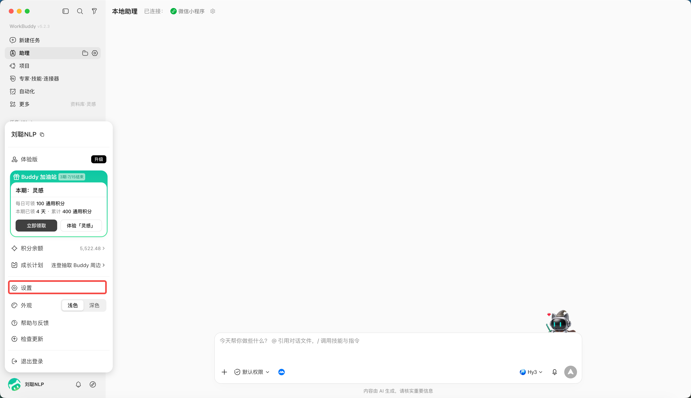
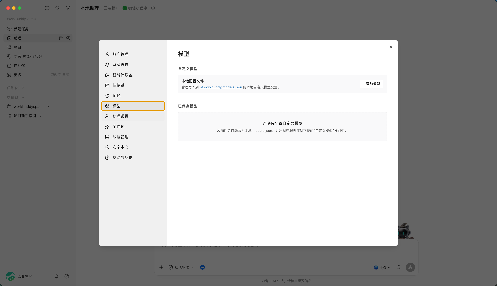
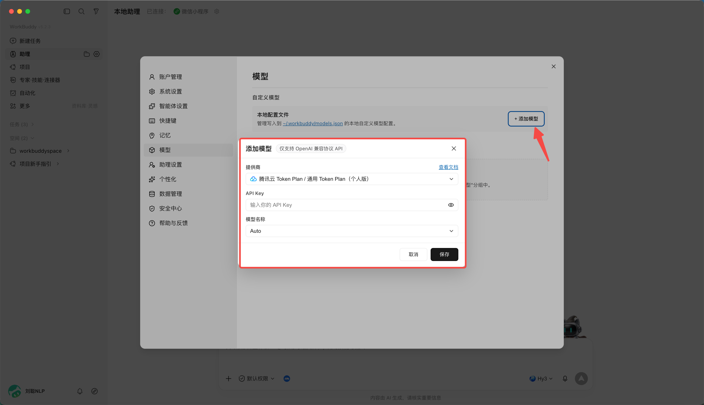
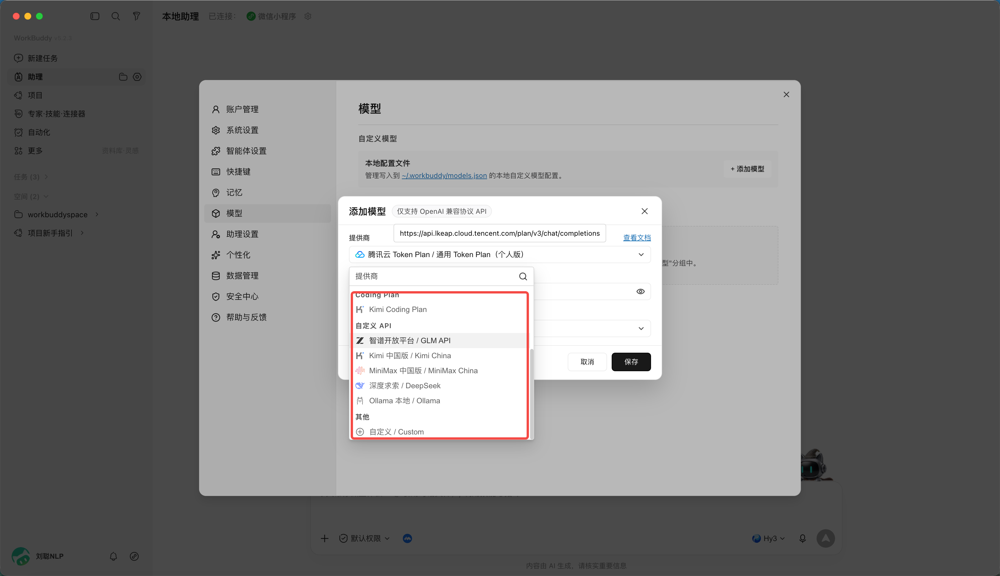
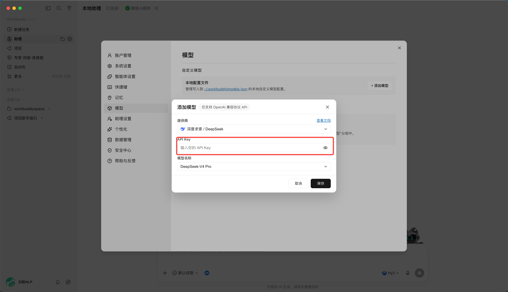
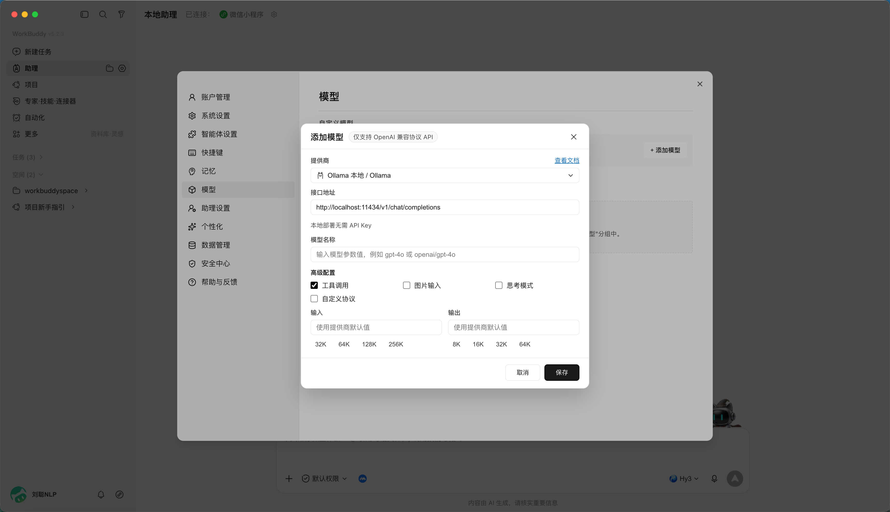

第 9 章 如何接入外部 API
你也许没有积分，但是你有自己的LLM API，
WorkBuddy支持接入其他 LLM 的 API，以及 Coding Plan、Token Plan 等套餐。
直接从设置中进入，

选择模型选项，

点击添加模型，

可以选择各种coding plan或者自定义的api

比如，DeepSeek，你只需要输入api key即可，

或者接入本地ollama模型，需先本地启动 Ollama（默认端口 11434，OpenAI 兼容接口），本地模型优势为数据不出本机、可离线、零 Token 成本。
